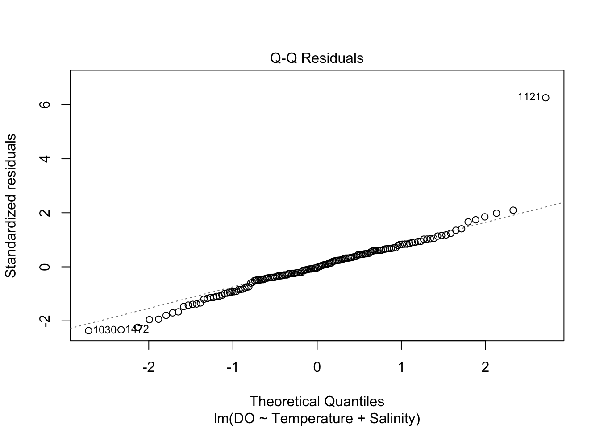
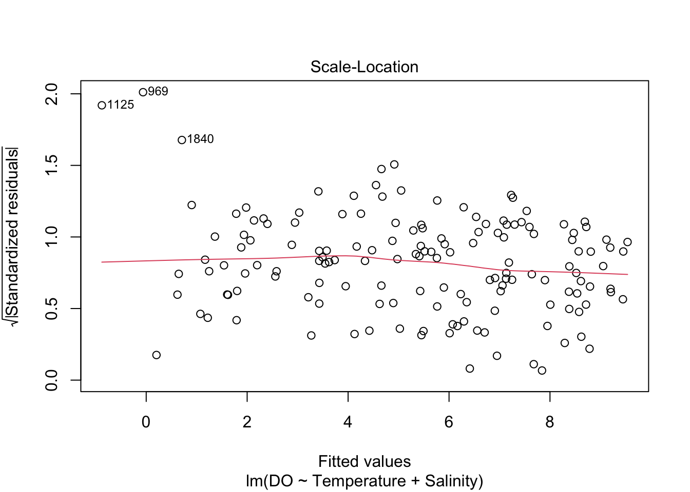
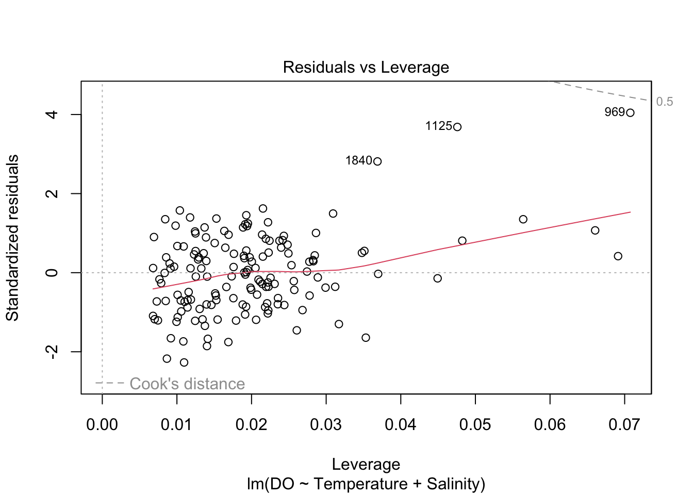
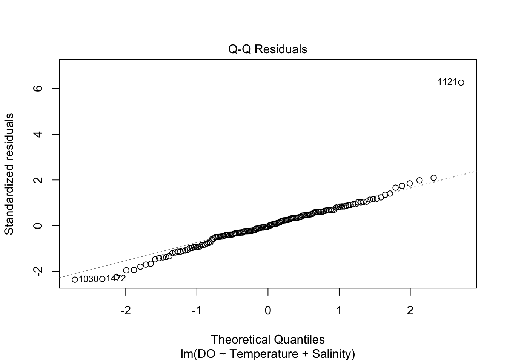
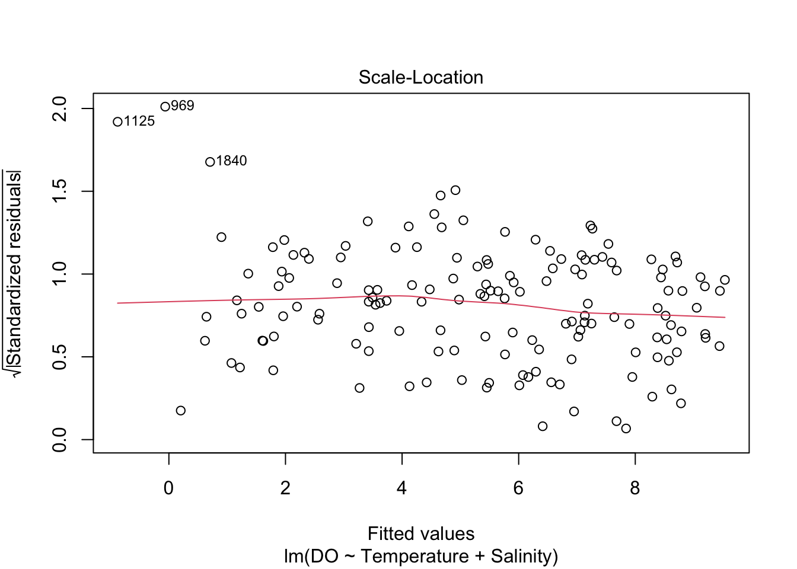
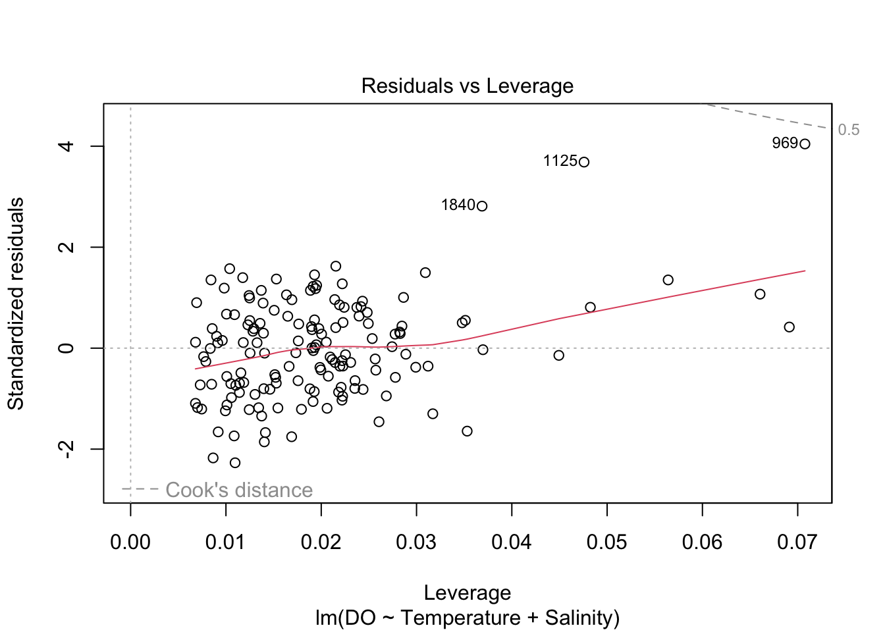

1.2 Model checking
Before we rush into using our fitted model to draw conclusions, it would be wise to check that it does indeed fit the data well, providing a good description of the observed data.
This model has a number of potential assumptions and it is helpful to make these explicit.
- The relationship between the mean value of \(y\) and each \(x_j\) is linear (a straight line) if the other explanatory variables are held fixed. A consequence is that the error term \(\varepsilon\) is assumed to have mean \(0\).
- In order to draw useful conclusions it is very helpful to make an assumption about the distribution of the error term. This is usually assumed to be Normal.
- A further convenient assumption is that the variance of the error term is the same for all observations and indeed at any future observations with different values of the explanatory variables.
- Another assumption which it is helpful to make is that the error terms are independent. This means that knowing the value of one particular value \(\varepsilon_i\) does not give us any information about any other value \(\varepsilon_j\).
Notice that all four of the model assumptions listed above can be expressed as statements about the error terms \(\varepsilon_i\).
We have fitted values \[ \hat{y}_i = (\hat{\beta}_0 + \hat{\beta}_1 x_{1i} + \ldots + \hat{\beta}_p x_{pi}) \] and, as before, residuals \[ \hat{\varepsilon}_i = y_i - \hat{y}_i . \] If the assumptions are valid then a plot of the residuals against the fitted values should show only random variation, without any systematic patterns in either location or scale.
 

A normal probability plot is designed to show an approximately straight line when data are normally distributed and so it can be applied to the residuals to check normality.
There are one or two issues to consider here. The plots of residuals versus fitted values may suggest a little curvature. There are also one or two observations which are unusual. We may need to revisit these later.